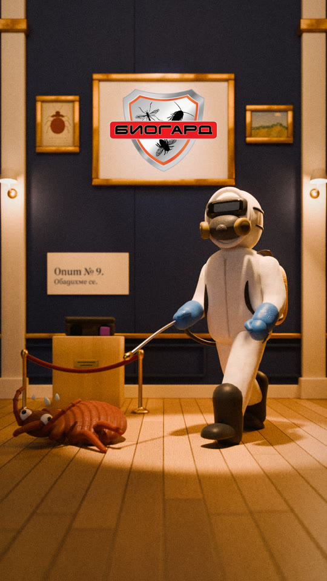
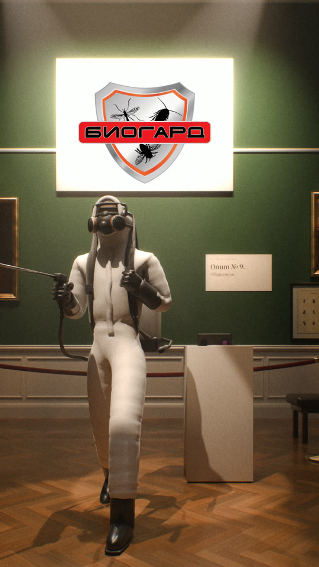

Тук са всички готови реклами за Facebook и Instagram. Видеата се въртят сами, отново и отново. За да чуете звука, натиснете бутона „Пусни звука“ под видеото. С плъзгача „Звук“ горе го правите по-тихо или по-силно.
Реклама 1
„2:47“ — нощно търсене
За какво
Дървеници.
Какво става
Човек не може да спи и търси в телефона какво го хапе нощем. Разбира, че сам трудно ще се справи, намира БИОГАРД и сутринта се обажда.
За кого
Хора под наем, млади семейства и хазяи.
Реклама 2
„Бележки на входа“
За какво
Мишки в мазето на блока.
Какво става
Съседите лепят все по-ядосани бележки на входа: „Кой остави вратата на мазето отворена?!“. Накрая идва обява за дератизация на общите части и всички се успокояват: „Входът се разбра.“
За кого
Хора в блокове и домоуправители.
Реклама 3
„3:12“ — нещо тича по тавана
За какво
Мишки на тавана. Рисувано с туш.
Какво става
Нощ е, нещо тича по тавана, а котката спи. Метлата не помага. Сутринта техник на БИОГАРД слага станции с примамка и капани. Седмица по-късно — тишина.
За кого
Хора в къщи и на последен етаж.
Реклама 4
„Една на светло“
За какво
Хлебарки. Рисувано с туш.
Какво става
Светва лампата в кухнята и една хлебарка бяга под хладилника. Чехълът не стига. Зад хладилника се оказва, че са много. Техникът обработва, а след второто посещение няма нищо.
За кого
Домакинства и малки заведения.
Реклама 5
„Ниво 1“ — като видеоигра
За какво
Мишки в блока.
Какво става
Зрителят „играе“ като мишката: промъква се в блока, стига до кухнята и залепва на капан до станция на БИОГАРД. „Край на играта.“
За кого
Всички, особено по-младите.
Реклама 6
„Щрангът“
За какво
Хлебарки в блока.
Какво става
Чертеж на блок: 16 кухни на една обща тръба. Хлебарките минават от съсед на съсед, затова БИОГАРД обработва целия вход, не само един апартамент.
За кого
Собственици на апартаменти и домоуправители.
Реклама 7
„Зимнината“ — мишките в мазето
За какво
Мишки в мазето есента.
Какво става
Мишка е при разкъсан чувал с брашно в мазето. Техник на БИОГАРД слага станция с примамка и лепилен капан. Седмица по-късно чувалът е цял.
За кого
Домакинства с мазе, 40–65 години.
Нови реклами за дървеници — кой стил е най-добър?
Правим 4 нови реклами за дървеници. Преди да ги направим, пробваме три различни стила. Всяка проба е кратко видео от 3 секунди без звук и една снимка от края на рекламата. Кажете на Преслав кой стил ви харесва най-много.
Стил 1 — пластилин
Като анимационен филм с пластилинови фигурки. Дървеницата е смешна, но се познава веднага.
Краят на рекламата

Стил 2 — истински музей
Като истинска зала в музей: модел на дървеница във витрина и неуспешните опити като експонати.
Краят на рекламата

Стил 3 — апартамент в разрез
Панелен апартамент, гледан отгоре като къщичка. С лупа се вижда къде се крият дървениците.